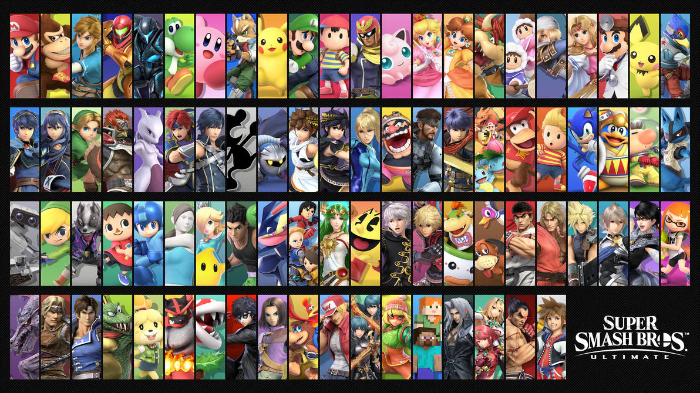

|  |
Super Smash Bros fue creado en 1999 para la nintendo 64, este al principio solo
incluía 12 personajes de 9 franquicias diferentes de nintendo, después el numero
aumento a 26 en Super Smash Bros Melee para la GameCube, después a 35 en
Super Smash Bros Brawl para la Wii, después a 58 en Super Smash Bros 4 para la 3DS
y la Wii U, y finalmente a 89 personajes para la Nintendo Switch con su ultima entrega
Super Smash Bros Ultimate. Contando asi con personajes de 37 sagas de nintendo, como Mario
Bros, The legend of Zelda, Kirby, Fire Emblem, FInal Fantasy, Pokemon, y muchas otras.
|